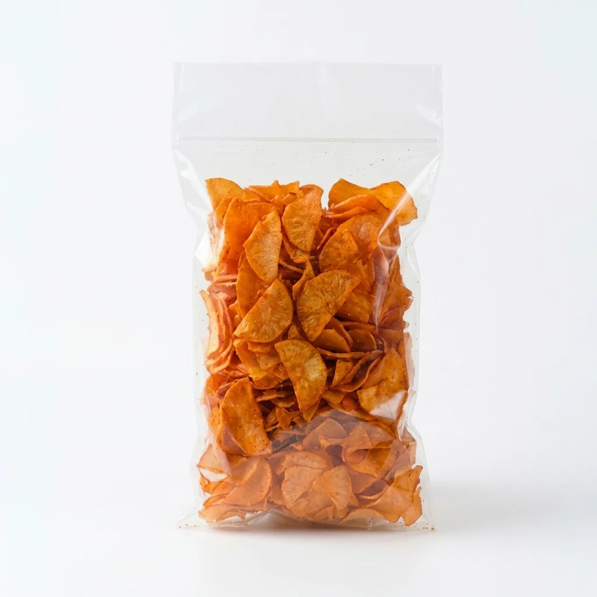

Cita rasa khas, kebanggaan Minang
Lezatnya tradisi,
Lezatnya tradisi,
hangatnya berbagi.
Temukan pilihan keripik dan camilan untuk menemani waktu santai, atau jadikan buah tangan istimewa bagi keluarga dan orang tersayang.
Pilihan camilanRasa Minang!
✦ Nuansa tradisi Minangkabau
❖ Beragam pilihan camilan
♡ Cocok untuk buah tangan
Temukan favoritmu
Pilihan camilan untuk setiap suasana
Kenali beberapa pilihan produk yang tersedia. Kunjungi katalog untuk melihat informasi produk lebih lanjut.

Rasa berbumbu
Keripik Ubi Balado
Pilihan bercita rasa balado untuk pencinta rasa gurih.
Lihat katalog ↗

Lebih dekat dengan kami
Oleh-oleh bukan sekadar camilan.
Setiap buah tangan membawa cerita dan kenangan. Rumah Adat Minang hadir sebagai tempat untuk mengenal pilihan camilan yang dapat dinikmati bersama maupun dibawa pulang untuk orang tersayang.
Jelajahi profil usaha dan temukan informasi lebih lanjut mengenai Rumah Adat Minang.
Kenali Rumah Adat Minang ↗
Tradisi
Terinspirasi nuansa Minang
Kebersamaan
Teman berbagi cerita
Buah tangan
Untuk orang tersayang
“
Bawa pulang rasa, bagikan cerita, dan hadirkan kehangatan dalam setiap kebersamaan.
RUMAH ADAT MINANG
Ingin tahu lebih banyak?
Hubungi Kami ↗
Temukan camilan favoritmu.
Lihat katalog produk atau hubungi kami untuk informasi lebih lanjut.